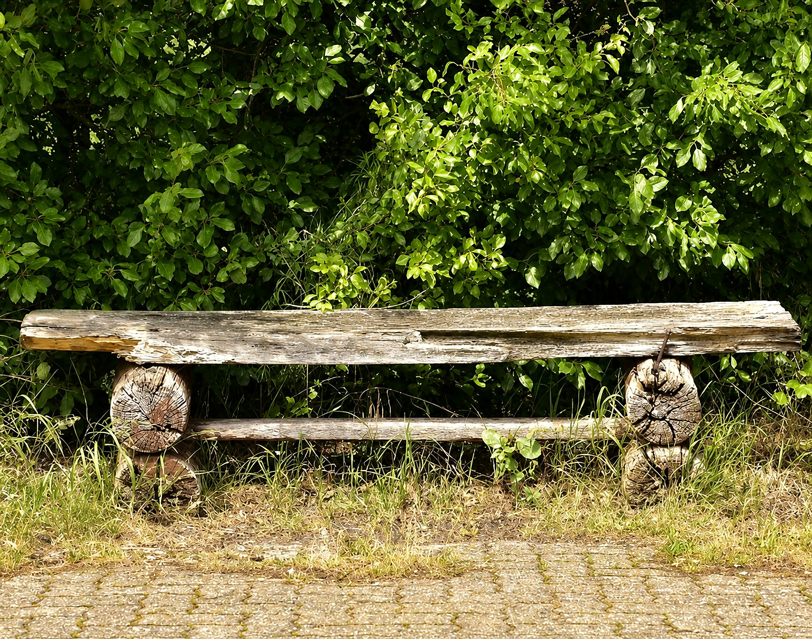
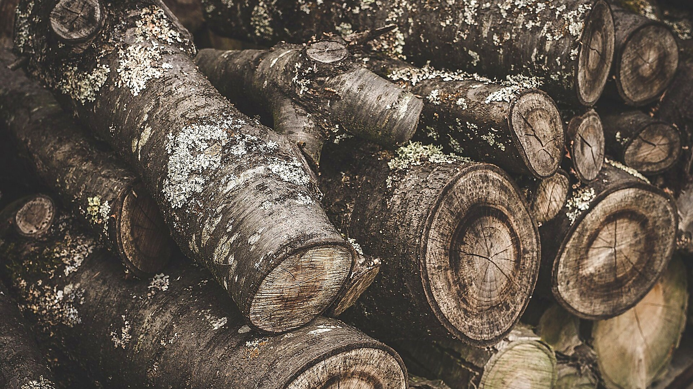
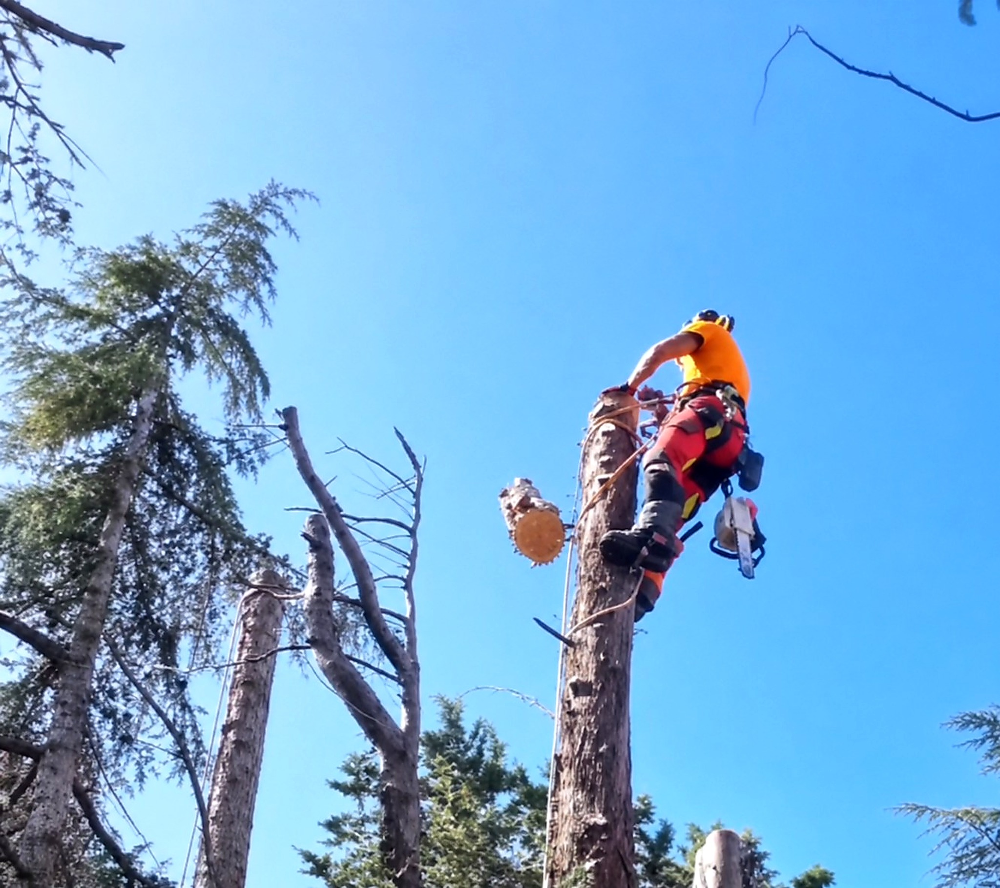

Agrotecnico certificato
Riciclo della Legna Urbana tra Perugia e Siena
Esperienza, studio e cura del dettaglio.
Perché il legno di città finisce quasi sempre in scarto
Un albero cresciuto in un giardino o lungo una strada produce, quando viene tolto, un legno che la filiera del legname non vuole. Non per la qualità: per come è fatto.
Un tronco urbano ha quasi sempre corpi estranei dentro. Chiodi, filo, ganci, pezzi di rete inglobati dalla crescita, a volte cemento: cose che nessuna segheria vuole incontrare con le proprie lame. Ha inoltre forme irregolari, curve, nodi grossi dovuti a potature vecchie, e arriva in pezzi corti perché così lo impone l'abbattimento controllato.
Il risultato è che il legno di città finisce quasi sempre nella stessa direzione: cippato o smaltito. Recuperarlo si può, ma non c'è una filiera che lo faccia al posto tuo: va valutato pezzo per pezzo, aperto per vedere cosa c'è dentro e lavorato a mano.
È per questo che il recupero della legna urbana resta raro, ed è la ragione per cui lo facciamo.
Il legno di un albero che è stato in un giardino per decenni ha una storia che quello di piantagione non ha, e ha senso che finisca in qualcosa che resta.
.jpg)
Tre materiali, tre destini
Ramaglia fine
La ramaglia fine è la parte più abbondante e la meno interessante da guardare, ma è quella che si riusa con meno passaggi. Cippata diventa pacciamatura da rimettere sulle aiuole dello stesso giardino: trattiene umidità, rallenta le infestanti e non deve andare da nessuna parte. È la quota che esce soprattutto da una potatura, dove il materiale è quasi tutto di piccola sezione.

Legna da ardere
La legna da ardere è la quota di fusto e branche con la sezione giusta e senza difetti che ne impediscano l'uso. È il destino più comune del legno buono, e quando il committente la vuole tenere resta dove è stata prodotta.

Tronchi con sezione sana
I tronchi con una sezione ancora sana e abbastanza lunga sono l'unica parte che permette di fare qualcosa che duri. Da lì escono panchine, tavoli e sedute: oggetti che tengono in vita un albero che è stato in quel posto per decenni, invece di farlo sparire in un cassone. È la quota più piccola di quello che esce da un cantiere, e l'unica che si perde per sempre se il taglio è già stato fatto pensando alla stufa.

Il recupero si decide prima del taglio
Non decidere il recupero a taglio già fatto
Una volta che il fusto è stato sezionato in pezzi corti, quel legno può solo bruciare.
Il recupero si decide prima dell'abbattimento, non dopo. È la cosa che si scopre quando ormai non serve più.
Il modo di smontare una pianta cambia se un tronco deve restare intero. Servono sezioni lunghe e con il taglio pulito, un punto dove calarle senza che si spacchino, e spazio a terra per movimentarle e caricarle. Sono scelte che si prendono al momento di pianificare l'intervento: una volta che il fusto è stato sezionato in pezzi corti, quel legno può solo bruciare.
C'è poi il tempo. Il legno appena tagliato non si lavora: va stagionato, e la stagionatura non è una formalità ma la parte più lunga di tutto il percorso. Un tronco messo da parte oggi diventa un oggetto molto più avanti.

- Non sezionare un tronco buono senza aver deciso cosa farne.
- Non calare le sezioni dove possono spaccarsi.
- Non lavorare il legno prima che abbia smesso di muoversi.
- Non mettere da parte legno cariato o proveniente da una pianta con un problema sanitario.
FAQ
Domande sul recupero del legno
Ogni albero abbattuto si può recuperare?
No, e si capisce solo aprendo il legno. Carie interna, marciume partito dal colletto, corpi estranei nella sezione: sono cose che dall'esterno non si vedono e che tolgono al tronco la possibilità di reggere qualsiasi struttura.
Quello che si può fare è guardare il fusto prima di sezionarlo e mettere da parte solo ciò che ha una sezione sana. Il resto segue le strade normali, senza essere caricato di aspettative che poi non si mantengono.
Si può far fare un oggetto con l'albero che è stato tolto dal proprio giardino?
Si può, ed è la ragione per cui vale la pena parlarne prima dell'intervento. Da un tronco sano escono panchine, tavoli e sedute, e la pianta resta in quel posto sotto un'altra forma.
Va detto però che non è un lavoro immediato: il legno va tenuto, stagionato e poi lavorato, quindi fra l'abbattimento e l'oggetto passa tempo. Chi lo sa in partenza non resta con l'impressione che il lavoro si sia fermato.
Quanto deve stagionare il legno prima di poterlo usare?
Non c'è un tempo valido per tutti. La stagionatura dipende dalla specie, dallo spessore della sezione, da come il legno è accatastato e da dove viene tenuto: un tronco grosso in un locale chiuso e uno spesso pochi centimetri all'aperto non seguono lo stesso percorso.
Quello che conta non è il calendario ma lo stato del legno: si lavora quando ha smesso di muoversi, non quando è passato un certo periodo. Lavorarlo prima significa vedere l'oggetto deformarsi dopo.